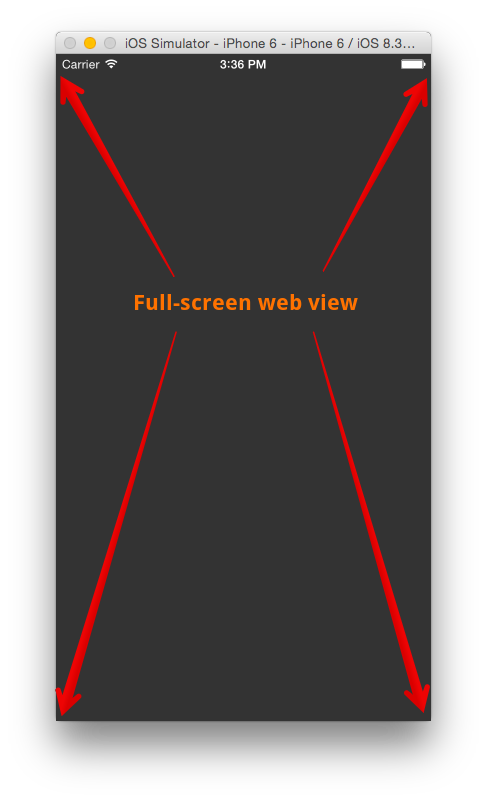
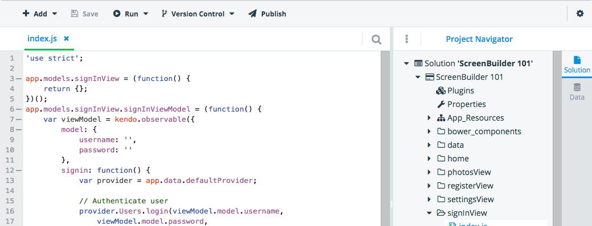
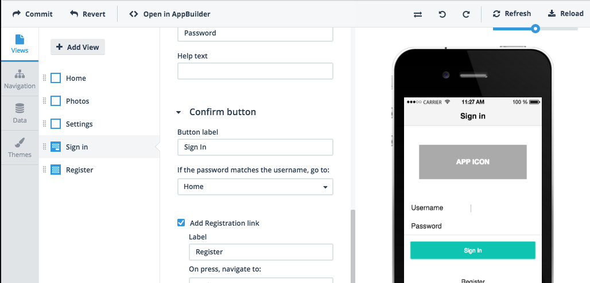
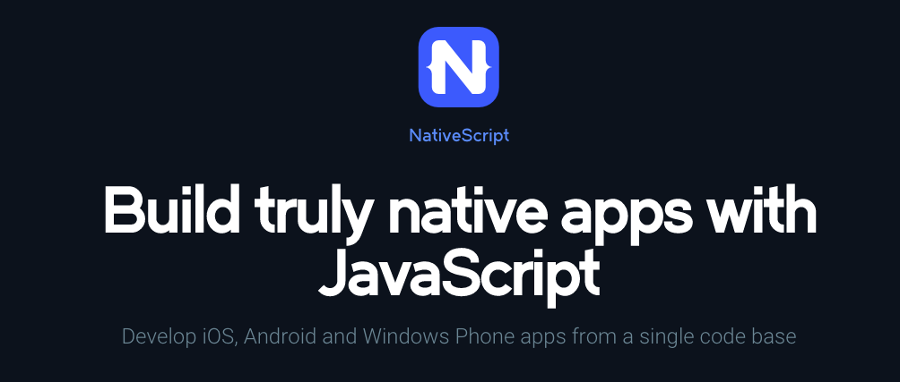

Cross-Platform Mobile Development for iOS, Android and Windows Phone
Who am I?
Tommy-Carlos Williams
Why Develop Cross-Platform?
- - Ship earlier on more platforms
- - Smaller development team
- - Leverage existing skills
- - Opportunity to have consistent branding & UX across platforms
Did You See This Slide?
Potential Downsides to Cross-Platform?
- - Difficult to access platform specific "look"**
- - Lack of deep integration with the platform*
- - Sub-par* User Experience (UX)
- - Poor performance*
* Debateable and mostly fixable
** Depending on the cross-platform solution
Cross-Platform Options
- Cordova / PhoneGap*
- NativeScript**
- React Native
- Titanium*
- Xamarin*
- RubyMotion
- ???
* Supports more than just iOS and Android, ie: Windows Phone, etc
** Support for Windows Phone coming
Apache Cordova / Adobe PhoneGap
First, a Quick Word About
Cordova vs PhoneGap
The battle that isn't
PhoneGap is to Safari, as Cordova is to WebKit
PhoneGap is the value-add from Adobe on top of the open source Cordova
Telerik's hybrid tools are built on top of Cordova
What is Cordova?*

Create native apps using html/css/js
Full screen web view (like a browser without the chrome)
Then add native device functionality via "plugins"
* From now on, when I say Cordova, assume I also mean PhoneGap
Cordova Demo
Common Mythconception #1
"PhoneGap (Cordova) apps are slow"
Nope. Apps built using appropriate CSS and JavaScript can be as fast and fun to use as native apps.
Not all types of apps lend themselves to a hybrid approach, but a majority do.
Common Mythconception #2
"Users can tell an app is hybrid, and they don't like it"
Thanks, Facebook...
Nope. "...users don’t really care what the app was built in – they just want it to be fast, accessible and fun to use."
Untappd, Wikipedia, Tripcase, Feedly, etc.
Greg Avola, creator of Untappd - Native or Hybrid – The Path of Least Resistance
KendoUI Mobile
Cordova & Kendo-UI in the Cloud
with AppBuilder

Cordova AppBuilder Demo
Designing an app with ScreenBuilder
ScreenBuilder Demo
NativeScript
What is NativeScript?
"A runtime for building and running native iOS, Android, and Windows Phone apps with a single, JavaScript code base"
No DOM
No cross-compilation
John Bristowe
A New & Better Way to Build Cross-Platform Native Apps
Tomorrow morning at 9am
What About React Native?*
Hard to call it "cross-platform" at the moment. Only for iOS.
* More of a "something to watch" at this stage...
Titanium / Xamarin / RubyMotion / etc
Not *my* area of expertise, but if your team has existing skills in one of the languages these use, they can be valuable for the same reasons as Cordova/PhoneGap.
To Sum Up...
Why Develop Cross-Platform?
- - Ship earlier on more platforms
- - Smaller development team
- - Leverage existing skills
- - Opportunity to have consistent branding & UX across platforms
Thanks!
Feel free to ask me any cross-platform mobile development questions you may have, as long as they have nothing to do with jQuery Mobile.
Just kidding*
* I'm totally not kidding